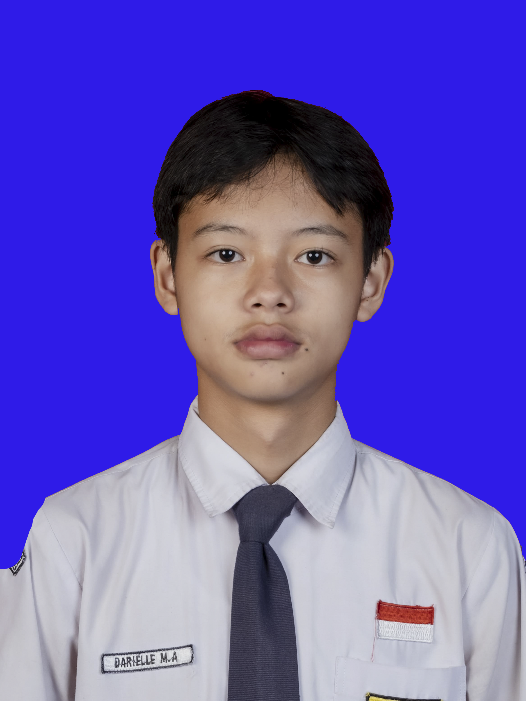

Saya lahir di Kota Magelang pada tanggal 25 Januari 2011. latar pendidikan saya sebelumya adalah dari SD Rejowingangun Utara 5 dan SMP N 1 Kota Magelang. Alamat saya di Nambangan RT 06 / RW 20, Rejowingangun Utara, Kec. Magelang Tengah, Kota Magelang.

Saya memiliki beberapa cita-cita yaitu
1.Pergi ke Jepang
2.Menjadi orang yang suskses
3.Membahagiakan kedua orang tua